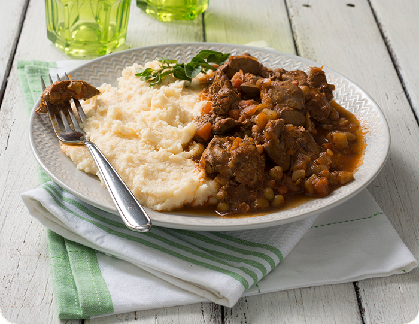

Spicy Chicken Livers and Pap

Spicy chicken livers and Pap recipes
Ingredient
For the chicken livers:
- 500 g cleaned chicken livers
- ½ tsp paprika (Robertsons Spices)
- 1 tsp Portuguese chicken spice (Robertsons Spices)
- 1 onion, chopped
- 1 tsp garlic, minced
- Salt & pepper, to taste (Robertsons Spices)
- ½ cup fresh cream
For the pap:
2 ½ cups wate
1 Knorrox Chicken stock cube, less salt
1 cup White Star Quick
To garnish:
Chopped parsley
For the chicken livers:
- 1. Season livers with paprika and chicken spice.
- Heat a little oil in a non-stick pan and fry onion and garlic
- Brown the livers leaving them slightly pink inside.
- Season with salt and pepper and pour in the cream.
- Simmer on a low for 10 minutes.
For the pap:
- Bring the water and the Knorrox Chicken stock cube to a boil.
- Add the maize meal and stir.
- Bring to the boil and cook about 4-5 minutes until the pap is thick, stiff and cooked through.
- Serve spicy chicken livers with stiff pap. Garnish with some chopped, fresh parsley and ENJOY!